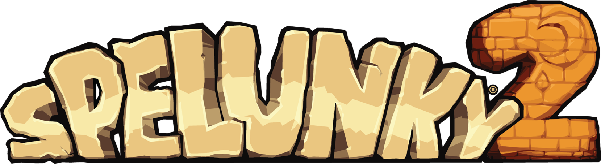
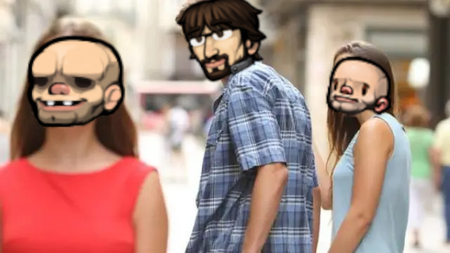
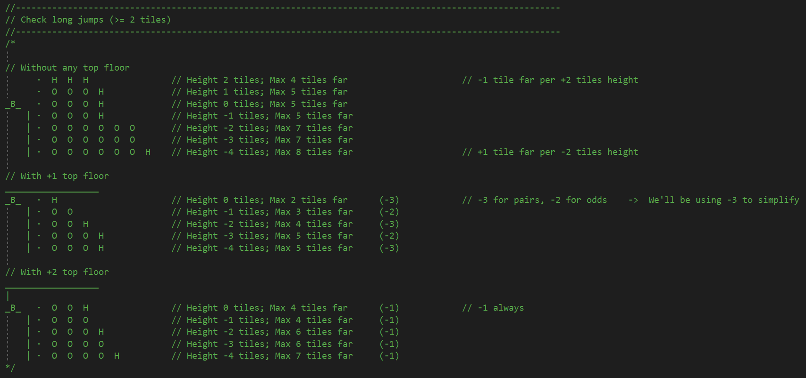
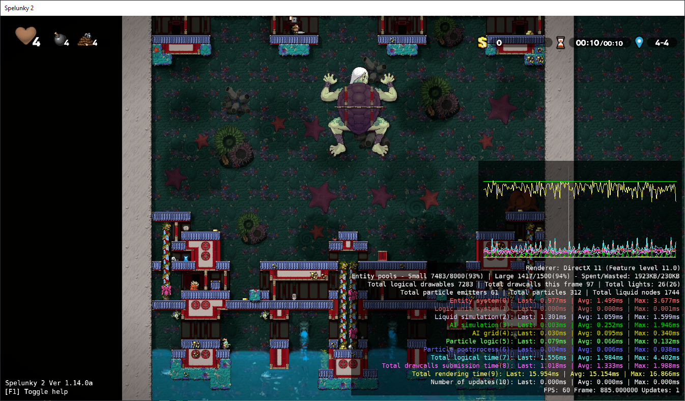
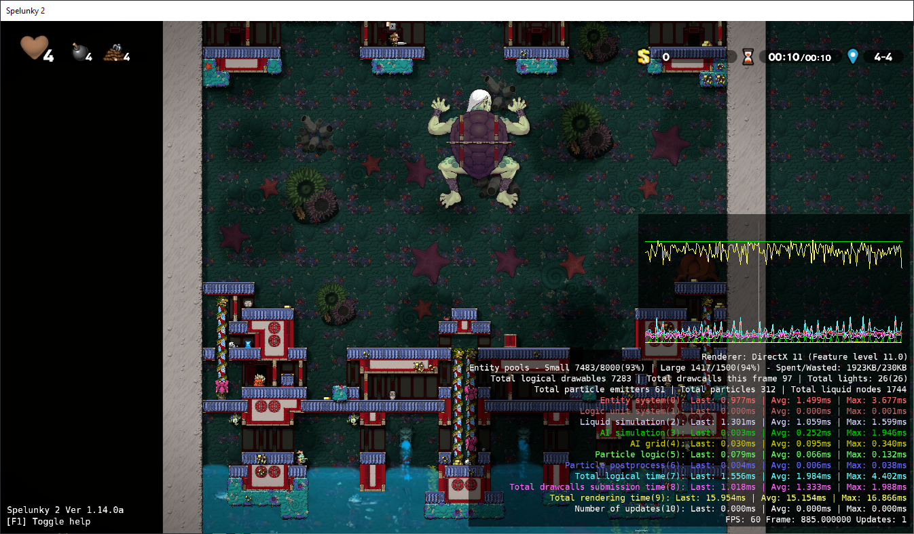
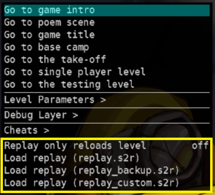
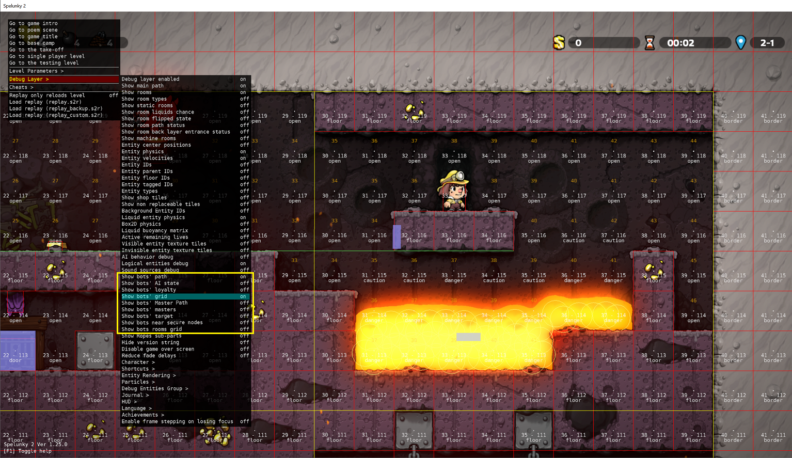
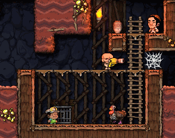
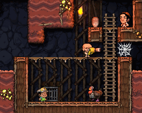

Problems, challenges, and solutions to creating the Artificial Intelligence of the Hired Hands
Javier Moya Nájera (eglomer)
A little introduction to chaos
It's been four years since the release of Spelunky 2, and I can't think of a better way to celebrate it than writing a little post-mortem of one of the most loved and/or hated characters of all: the Hired Hand (hereinafter HH), those adorable little baldies that can either save you from an evil caveman that threatens your adventure with a shotgun, or throw a stone on your head and send you into the lava just because.
My name is Javier Moya Nájera (better known as "eglomer" in the community) and I was one of the main programmers of the game. Among other things, I was in charge of implementing the artificial intelligence (AI) behind the HHs and, in this document, I will review the problems and challenges I faced when creating this AI, as well as the solutions we gave to those problems. Of course, dealing with each and every one of them would take too much time, so we will focus only on the most important or relevant ones.

Trying to kill the HH to test the danger detection.
In the beginning, Andy created the Hired Hands
Andy Hull was the lead programmer on Spelunky HD and he was in charge of programming the original HHs. From my point of view, Spelunky HD's HHs were fun and worked very well within the game, so at first I did the same as we had done with other entities in the game such as bats or spiders: I ported the logic of the first game directly to the second, adapting the different technicalities to the characteristics of Spelunky 2. The result was... let's say "interesting".
The HHs didn't work properly with the new input system so, most of the time, they ended up hanging from some edge, unable to move. Also, there were a lot of new elements in the game that the pathfinding system didn't understand, like the dynamic liquids, the platforms, or the back layer of the level. In addition, physics was not exactly the same, so distances, speeds, etc. had changed, and, of course, there were new monsters like the beloved moles, or objects like the powerpack.
There were changes, lots of them, so we had two options on the table: either to adapt the code of the previous game to the new game, dragging its possible problems and limitations, or to clean all logic from the system, leaving only the bases of the pathfinding algorithm and start from scratch, adding again all the enemies, objects, ground types, etc.
In the end, we chose the second option and a frustrating-but-fun adventure began.

I'm sorry, Spelunky HD's Hired Hands!
With everything cleaned up, I started working on the pathfinding system where the HH would stay still and simply calculate the path to my character. By doing this, I was adding the different types of floors, ladders, and so on so that the HH was step by step able to properly calculate the paths.
As the HH was generated at the entrance of the level and the levels are usually downward oriented (the exit door is at the bottom of the level), everything was going pretty well, until I tried it backward, and then I faced the blissful gravity.
The algorithm we use for the pathfinding is an A* algorithm (you can read more about how it works here). This algorithm is relatively simple when 2D games are flat motion games (up and down moves the character back and forth, like in a classic Zelda), but Spelunky is a horizontal motion game, so we have gravity and, therefore, we need jumps to reach high places. But how do we calculate the jumps? How far can the character reach? What jumps are considered possible or impossible? And if we also have equipped a power-up like the spring shoes? Because we cannot forget that, in the Arena mode, these power-ups and objects such as capes can be equipped by both humans and bots.
So, I spent some time testing jumps myself, with my average player skills, and I took notes of speeds, distances, and results in jumps of different characteristics and under different circumstances. All this led me to draw a generic formula of what could and could not be done, and that served as a basis to gradually implement the jumps for the HHs.

Small scheme resulting from my initial tests.
In retrospect, perhaps it was not the best way to proceed, since this all depended on one important factor: the physics. If for any reason there had been any change in the physics system (the speed of movement or the strength of the jump) it might have thrown the whole jump calculation out of whack but, fortunately, this was not the case.

The HH looking for the way to my position.
And, at last, the moment of truth arrived! Once the pathfinding was mature enough, I enabled movement in the HH who, as I said before, was simply following me like a duckling with no other goal than to get to my character. Then I hit my face with the other part of gravity: falls.
"What goes up must come down", says Newton's law of gravity, and it is as valid in real life as it is in Spelunky 2. The problem is that the HH's AI didn't take falls into account, so in the first tests jumping down usually meant that the HH would hit the ground face first if the fall was big enough, dealing with the corresponding damage.
To solve this, I just added a dangerous fall detection system, so that when a certain speed threshold was exceeded, or if just below there was dangerous ground (such as spikes or lava), the pathfinding looked for the nearest safe node (some edge or rope to hold on to, some intermediate ground where to reset the fall speed...) and redirected the HH to it, so that damage from falls was avoided.

The HH jumping over some spikes and calculating the safe landing point (purple).
With this fixed, the basic movement of the HHs was finally complete.

The HH following my character wherever she goes.
One grid to rule them all
With the HHs already in motion, working on them became more comfortable. It was exciting to see how they were, little by little, being able to make difficult jumps, dodge traps, or defeat enemies, although certain limitations and problems also began to emerge; but before explaining these problems we must understand better how the pathfinding system used in the game works.
Our algorithm, as we have said, uses A*, which is basically a grid where each node of the grid is analyzed to determine what is in it and, based on that, make the AI react in one way or another. You can see this in the screenshots above, where you can see the node type (open for open spaces, floor for floors, danger for nodes where it is better not to be...). This grid, so to speak, is like the eyes of the AI, where it sees what is in there and, based on that, it decides how to proceed.
The HH grid was something we inherited from Spelunky HD and it had these characteristics:
• Each HH had its own grid and moved with the HH, so that the HH was always in the center of the grid.
• It was the size of two rooms; this was due to the technical limitations of the Xbox version where larger grids caused slowdowns, so Andy had to reduce its size to the minimum acceptable (since deathmatch levels there were always one-room-sized and, since the HH was in the center of the grid and the grid moved with it, by making it two-room-sized, if the HH was on the edge of the level the grid would be big enough to reach the opposite edge, making sure that the AI always knew everything that was going on in the whole level).

Example of grid (in yellow) with the HH in its center.
This presented some problems, the first of which was related to its size. As the size of the grid was limited, the AI was unable to "see" what was outside that space and, therefore, sometimes it did not find its way to something that was easily accessible, or it started to go back and forth continuously (e.g., it detected an object, it calculated its path to it, this path implied that it had to move away from the object, this caused the grid to move and then the object was out of its sight so it stopped going for it, returning to the initial position, detecting it again and going into a loop).
This limitation also affected something that I considered quite important, and that was being able to follow the player without getting lost. With a grid of that size it was very easy that, if the HH was stunned by any reason while the player continued advancing in the level, when waking up, as the player was already out of sight, he did not know where he should go; or worse, it would detect the player on the floor above or below and go crazy trying to get there but not finding a way, returning to the back-and-forth issue we said before.
This was initially solved with a player tracking system so that each HH was storing the last positions of the player he was following in each room. This way, he would follow these last positions, which were always within his sight, until he reached the player.

The HH following the player's trail room by room.
Although initially it worked quite well, this solution was not without problems because sometimes there were impossible positions to reach if the last position was, for example, in mid-air and the HH had fallen to the floor below, causing the HH to be blocked trying to reach that node. As a result, this solution was eventually discarded.
Last but not least, the fact that each HH had its own grid meant that, in the case of having several HHs, nodes were being processed repeatedly if the HHs shared the same space. This processing could be relatively expensive, especially if it involved liquid detection, which could, under certain conditions, affect the performance of the game.

Example of dynamic processing of nodes with liquids.
Taking all these problems into account, I designed a shared grid used by all HHs and occupying the whole level, separating the actual process of pathfinding into two parts: on the one hand the pathfinding itself and, on the other hand, the processing of the nodes in the level. This meant that:
• HHs stopped processing the nodes themselves, taking over only the path computation, and obtaining the data from the shared grid.
• The shared grid was in charge of managing the update of the nodes, eliminating the duplicity of calculations.
Thanks to this new shared grid, we managed to solve all the problems detected in the use of the individual grid, although, as we will see in the next section, it also had some inconveniences.

Shared grid occupying the entire level.
We had just changed a few small grids to a shared grid of a huge size that was in charge of checking all the nodes in the level every few frames. As expected, this caused some performance issues, so we had to find a way to make it work efficiently. Otherwise, all the effort would have been in vain.
The solution was to divide the shared grid into several groups. Taking advantage of the fact that we already had the concept of "room" in the game, I used that as a divider, so now the shared grid instead of updating the entire level was updating rooms and, of course, not all at the same time. I added a diamond-shaped priority system, so that if a HH was in room X, that room and the adjacent rooms above, below, left, and right got the highest priority, and the rest of the rooms got their priority based on how far they were from the HH. This added to a limitation of how many rooms could be updated in each frame gave us the perfect solution to maintain the shared grid without seriously affecting performance.

Schematic of how the priority system works.

Priority system in action.
Even so, there was still something that could be worrying and that was the HHs' pathfinding itself. Although the creation of the shared grid had improved the times of these searches, the truth was that when many HHs gathered together, times rose up. After investigating it, I saw that the problem was that, although the HHs limited their path updates to once every few frames, they all coincided in the same frame, so we had N frames in which no HH updated its path, and in frame N+1 suddenly they all started to make their calculations creating a hiccup in the game.
Again, it was sufficient to divide the workload into several frames in a similar way to how it had been done in Spelunky HD. Thus, a limit was set on how many HHs could compute their path in the same frame. This limit was dynamic and was based on how many HHs were in the level so that if there were few HHs, each one did its calculations in a different frame, but if there were many, the limit was increased dynamically so that none of them was left without calculating its path.

"It's my turn to calculate!"
"No, it's my turn!"
Finding the perfect balance
I had already solved the main performance and pathfinding problems. Everything was perfect, it was a sunny day, the sky was clear, and I was going along happily when we got a report from a user saying that the Kingu's level was slowing down when they had some HH if the player character was on the monster's back.
Surprised, I set to work to find out what was wrong with my "wonderful" and apparently not-so-perfect system. After managing to reproduce the problem and analyze the numbers a bit, I understood what was going on.
It turns out that, in its attempt to find a path to the player, the AI was processing practically the entire grid (which, let's remember, occupied the entire level) and that was causing some pretty pronounced stalls:

The AI ("AI simulation" in green) causing stalls when trying to calculate a path to the player.
HHs have a special treatment in this kind of levels to try not to interfere with boss fights, so this particular case was not especially worrisome (it was enough to prevent the HH from trying to follow the player), but this revealed a problem that could occur if the HH failed to calculate any path to the player, where it would process hundreds of nodes in its exhaustive search for a valid path.
To solve this, what I did was to limit the number of nodes that could be processed in a single frame. Once that limit was exceeded, the AI would simply take the closest possible node to the player and start moving to it, hoping that in the next path calculation it would find a valid path. Thus, by gradually approaching the final goal, the time taken by the AI to reach its goal improved.
This, although it worked in principle, led to a tug-of-war of testing and retesting until I found a balance between the number of nodes processed per frame and the possibility of the HH getting lost. So, I finally came up with a number that allowed the AI to reach its destination in most cases.
In case of loss, the AI at that time already had a wandering mode where it would wander from one side of the level to the other trying to find the player, so for this scenario nothing extra had to be done.
Looking at it in pictures, we went from this, where the entire path was calculated in one shot:
 To this, where in the first few iterations the maximum limit was exceeded, so the HH used the nearest position (the end of the blue line) until he was close enough to find a direct path:
To this, where in the first few iterations the maximum limit was exceeded, so the HH used the nearest position (the end of the blue line) until he was close enough to find a direct path:


 Thanks to this, the behavior of the HHs hardly changed from their previous behavior, but the performance in extreme cases improved markedly:

Thanks to this, the behavior of the HHs hardly changed from their previous behavior, but the performance in extreme cases improved markedly:

AI measurement ("AI simulation" in green) calculating a path to the player after the changes.
God bless the debug tools!
When facing all these problems and challenges we had a variety of tools in the game that helped us to detect and fix all kinds of situations. For example, by pressing a button we could pause the game to see the state of the game in that particular frame, press another button to advance frame by frame, or speed up the game to get anywhere fast. That's why it's not surprising that, from time to time, a member of the team would say "God bless [insert here the name of the tool you prefer]!".
Among all the tools we developed, three of them were crucial for the development of the AI: the replay system, the autotesting system, and the debug layer.
The replay system was a system that was saving in each level all the inputs that happened in the game while you were playing, both from players and non-players, so that if you played that replay, you could reproduce exactly everything that had happened in that level. So, if our wonderful colleagues at Lollipop Robot (our QA team) saw during their testing sessions some strange behavior, they could send us the replay and we could see exactly what had happened and, even better, reproduce the bug as many times as necessary until we could find out what was causing it and check that it was really fixed once a fix was made for it.

Replay options in our development tool layer.
Autotesting, on the other hand, was originally born to detect errors in the generation of levels. What it did was to generate a random level, make a series of checks, and go to another level, and so on until it found an error, and all of this at a crazy speed. At one point Micky, our lead programmer, suggested the idea of hooking the AI to the main character and having them simply try to get to the exit door. A couple of hours later, our autotesting was up and running, although at first the AI didn't know how to fight monsters or make very complex jumps, so it tended to die quickly. As the development of the AI progressed, this autotesting became more and more an indispensable tool to the point that many times I used to watch the AI trying to beat a level to detect errors in the combat system, or in the pathfinding (setting it to at normal speed, of course; with the turbo on there was no way to see anything). Also, now that the autotesting was not only just loading one level after another but there was "someone" actually playing it, we managed to discover and patch bugs and situations that otherwise would have been almost impossible to reproduce (for example, crashes in which a specific situation had to occur in a specific frame to happen).

Autotesting at full speed.
Finally, the debug layer allowed me to add any kind of information I needed to see on screen: the AI grid, the path it had found, the status of each HH... You can see it in almost all the screenshots of this document.

AI options inside the Debug Layer.
We had many more tools available, but of all of them, without these three, the development of the HHs would have been much more expensive and tedious.
God bless them!
There's nothing further, Your Honor
And we have reached the end!
These have been some of the adventures and misadventures I have experienced working on the AI. Sometimes I cried in frustration, and sometimes I jumped out of joy, but mostly I had a very, very good time and I have great memories of it.

The HH taunting death.
And, despite what may be an unpopular opinion, I think HHs are great companions. Yes, they are not perfect (neither are we), and they have ruined me more than one run, but I think it is precisely in that imperfection where their charm lies, in that balance between good companion and bad companion: they can either get rid of any enemy like a real ninja...
 ...or throw something on your head (always trying to help, of course) and you end up dead and buried.

It's almost like playing with another person. Or maybe it's just me. Maybe after so much time together, I've grown fond of them even with their weaknesses. I don't know... maybe it's just fatherly love.
...or throw something on your head (always trying to help, of course) and you end up dead and buried.

It's almost like playing with another person. Or maybe it's just me. Maybe after so much time together, I've grown fond of them even with their weaknesses. I don't know... maybe it's just fatherly love.

"Thanks for reading!"
September 15th, 2024.